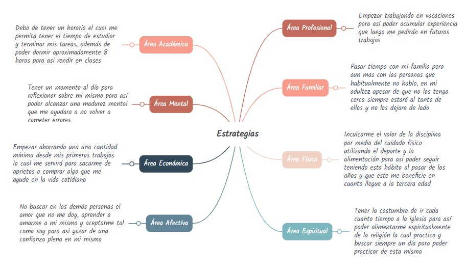
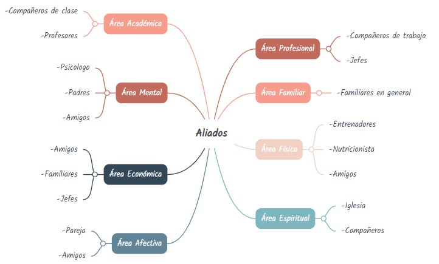

Alumno: Emilio Andrés González García
Asesor: Prof. Emerson Soto
Fecha: 6 de Marzo, 2023
Soy una persona muy empática conmigo mismo y con los demás, suelo ser paciente y dedicado a mis objetivos.
Me considero alguien de valores, me respeto a mi mismo e intento mejorar cada día.
Me veo teniendo mi doctorado en Ingeniería en sistemas y trabajando en una gran empresa extranjera. además de tener mi propia casa sin dejar de lado mi relación con mi familia apesar del distanciamiento, concentrandome en mis metas y futuros proyectos como programador, teniendo en claro mis creencias y saber firmemente lo que deseo, aprovechando mi juventud para estar en forma y dar lo mejor de mi en todos los ambitos, tener estabilidad económica la cual me ayude en toto momento.
Ser un persona dedicada en mis compromisos y como programador tengo el objetivo de ayudar a la sociedad por medio de sitios web que faciliten la vida humana. Poder domentar a los jóvenes valores y como ayudar a los demás através de la tecnología.
Académica Profesional:
Familiar:
Física:
Espiritual:
Mental:
Económico:
Afectivo:
ESQUEMAS
 La importancia de la redacción del esquema de aliados causa que las personas sean conocedoras en quiénes pueden confiar en las áreas importantes de su vida. Además estos ejercicios ayudan a fomentar en la confianza hacia otras personas.
Antes que nada quisiera agradecerles a mis padres por el esfuerzo que han hecho para que este hoy aquí, también al Profesor Emerson por su dedicación y empeño que ha puesto en nosotros.